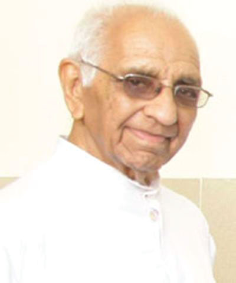

After umpteen brainstorming sessions and hours of deliberation, hoping to get our minds fixated on ‘the perfect’ theme for Fragmag 2016, we finally zeroed in on this beautiful word—‘Kairos’.
‘Kairos’ is a Greek word denoting ‘the right or opportune moment’. According to ancient Greek mythology, Kairos, the youngest son of Zeus, was also the Greek god of opportunity. He was lithe, swift on his feet and had a characteristic tuft of hair across his forehead. He could be seized by his forelock as he approached, but once he raced ahead, it was impossible to get hold of him, the rest of his head being completely bald. He therefore served as a paradigm for—‘Seize the opportunity’, reminding us to make the most of the chances that come our way, most of the time, unanticipated.
“There are moments which mark your life. Moments when you realize nothing will ever be the same, And time is divided into two parts – before this, and after this.” —John Hobbes
Kairos is the time of expectation and excitement; it is an indefinite window of opportunity, also called ‘God’s time’, which lasts for a few fugacious moments, but leaves an ingrained impression on one’s life. For some, it may be the time they turned the corner to succeed in their endeavors, for some, an epiphany that changed their lives, while for most others, the time when they clasped promising opportunities. All of us have experienced certain kairotic moments that have been etched into our memories, making it possible for us to relate to the theme and interpret it in our own way. The Editorial Board thus believed that ‘Kairos’ was a befitting theme for this year’s edition. The overwhelming response we have received from everyone has only ascertained our belief. We hold extreme pride in being called the English Editors of our precious college magazine and being a part of the Editorial Board—a coalescence of creativity, talent and zeal. We are highly impressed seeing the diversity in the topics people touched on for this particular theme, right from philanthropy and feminism to politics; many have also shared their personal experiences that brought smiles to our faces. Working on their writings has been an incredible experience, and taking a peek into everyone’s minds has been wonderful. None of this would have been possible without the constant encouragement and wholehearted support of Prof. Tisha Jose. We hope you enjoy reading the magazine as much as we enjoyed putting it together. Happy Reading Folks!| University | Location | State | Year Founded |
|---|---|---|---|
| Brown | Providence | Rhodes Island | 1764 |
| Columbia | New York | New York | 1754 |
| Cornell | Ithaca | New York | 1865 |
| Dartmouth | Hanover | New Hampshire | 1769 |
| Harvard | Cambridge | Massachusetts | 1636 |
| Pennsylvania | Philadelphia | Pennsylvania | 1740 |
| Princeton | Princeton | New Jersey | 1746 |
| Yale | New Haven | Connecticut | 1701 |
| University | Admission as % of applicants | Total Intake (UG+PG) | Student/Teacher ratio |
|---|---|---|---|
| Brown | 8.6% | 8647 | 12:1 |
| Columbia | 6.9% | 22920 | 6:1 |
| Cornell | 14.0% | 20633 | 7:1 |
| Dartmouth | 11.5% | 6141 | 11:1 |
| Harvard | 5.9% | 21225 | 5:1 |
| Pennsylvania | 9.9% | 20643 | 5:1 |
| Princeton | 7.3% | 7592 | 6:1 |
| Yale | 6.3% | 11666 | 3:1 |
“Life is dynamic and not static”. The dynamism of the Students’ Council for the academic year 2015- 2016 began with its installation on 10th April 2015. The planning and preparations for the next semester started soon thereafter. Our Council made an attempt to inspire creativity through innovative, interactive, interesting and informative events. ‘The International Yoga Day’ was the first event of the Students’ Council, when many of the Staff and Students pulled out their yoga mats and took part in the yoga session conducted by Ms Leena Pandit.
‘No person is an island’ and hence to foster camaraderie, to add color to the lives of the students in the campus ‘Friendship Day’ was celebrated on 31st July wherein students from various disciplines participated with childlike enthusiasm and played games like scrambled legs, sound game and balloon caterpillar. TE IT emerged as the winners.
In an effort to make our First Year colleagues feel at ease we organized a Fresher’s Day on 22nd August. It was a small informal gathering with fun, food and fiesta. Ms. Shreya was crowned the Miss Fresher title and Mr. Atharva bagged the title of Mr. Fresher.
We expressed our gratitude towards our teachers for their constant support and guidance on 5th September, marking ‘Teachers’ Day’. This was done by the distribution of flowers and chocolates to all the Fathers, teachers and the office staff.
The most prestigious event of the college Fr. Conceicao Rodrigues Memorial Debate was held on 11th and 12th September with the theme “Appeasing mists shrouding the hills of reality”. An inter-collegiate event that witnessed 32 teams battling against each other for the prestigious trophy. Ms. Shashi Baliga, an independent journalist, was the Chief Guest and Ms. Suchitra Pillai, one of our alumnus, was the Guest of honor. The coveted trophy was won by St. Francis Institute of Technology.
The Council organized a week long Industrial visit from 26th December 2015 to 2nd January 2016 to Amritsar, Dalhousie and Dharamshala. There was an overwhelming participation of 200 students, who were accompanied by 6 staff members. The trip included visits to Khanna Paper Mills at Amritsar, Hydro Power Private limited at Dharamshala and the Glacier Private Limited at Dalhousie. The students were also taken for sightseeing to the Golden Temple, Wagha Border and Jallianwalla Bagh in Amritsar.
The Student’s Council in collaboration with the E-Cell of our college organized a one day trek for the students, to Lohagad on 6th January 2016.There were 150 students who actively participated in this event.
The festival of fun and frolic, music, rhythm, drama, dance and fusion called Euphoria, begins from 22nd February 2016 and continues to be at its peak till 26th February. The theme for this year’s Euphoria is ‘Reminiscence- An insight into the past’. The show begins with the Annual Prize distribution on the 22nd February. The first three days will see a spectrum of activities where students will showcase their talents in literary and performing arts, fun, personality and gaming events and sports. For all the college nightingales a Karaoke too will be organized. 24th February will witness the WAR OF BANDS where bands from across Mumbai will enthrall the festival. 25th February will see the Intra College Fashion Show followed by the Inter College Dance Competition ‘Paridhan’ at the Rangsharda Auditorium. The magical Intra College Dance competition will be held at Yashwant Natya Mandir on 26th February, with the Dramatic Club showcasing their skills. In the evening we shall have the prize distribution followed by the DJ Night and the gala dinner which will be held in the college campus. This will mark the end of Euphoria 2016.
I would like to thank every individual colleague of mine at Fr. Conceicao Rodrigues College of Engineering who has co-operated and guided us to make this academic year culturally enriching and successful.
The Fr. Conceicao Rodrigues College of Engineering presented the Fr. Conceicao Memorial Debate, a National level inter-collegiate debating event addressing current topics. The 17th edition of the series saw 32 colleges across Maharashtra, Gujarat and Karnataka pit their wits against each other on the 11th and 12th of September 2015 at the Fr. Conceicao Rodrigues College of Engineering, Bandstand, Bandra.
This theme for this year was as eloquent as it was harsh. The cruel reality is often covered by the rose bedded lie that is shown to us. A man’s quest for the truth is what inspires him to look beyond the appeasing lie and embrace the reality. Keeping in mind the current scenario, the theme for the 17th edition of the prestigious event was “Appeasing mist shrouding the hills of reality”.
The opening ceremony was graced by the founder-director of Chanakya Institute of Public Leadership, Mr. Radhakrishnan Pillai and famous actress and model, Ms. Suchitra Pillai. Both the invitees enchanted the audience with their powerful yet mesmerizing speeches.
The competition comprised of 5 rounds (Eliminations, Pre-quarters, Quarters, Semi-finals and Finals) which followed a knockout, non-parliamentary format. The first day witnessed 32 teams battling it out on a variety of topics ranging from socio-economic to political trends gripping the nation to topics concerning the entire world. Marital rape, Technocracy, Vidarbha, Parliamentary canteen subsidies, the non alignment movement were some of the many crucial topics deliberated and discussed upon. After 28 nail-biting and incredible debates, four teams, that is, Fr. Conceicao Rodrigues College of Engineering, Don Bosco Institute of Technology, St. Francis Institute of Technology and Institute of Chemical Technology emerged victorious and made it to the second day.
The final day was held in the host college’s state-of-art auditorium “Samvaad”. The topic for the first semi-final between Fr. CRCE and SFIT was ‘Soldiers should be allowed to refuse participation in military actions on the basis of their conscience”. The second semifinal witnessed DBIT battle it out with ICT, on the topic ‘India should actively support the Tibetan Freedom Movement’. Both the semifinal rounds proved to be highly entertaining and amusing and resulted in SFIT and DBIT as the two triumphant teams.
The finals witnessed an enthralling and insightful debate in front of a packed Samvaad, which was grilling for the teams and thrilling for the audience. The motion was “Developed countries should integrate war refugees into their society” which was proposed by SFIT and opposed by DBIT. It was judged by Senior Professor, Ms. Nilanjana Gupta, Senior Professor at MMK College and Mr. Mohit Chhabra, working in the Quality assurance lead dept for TCS.
Famous journalist and writer, Ms. Shashi Baliga, graced this occasion as the chief guest. She addressed the audience with an enriching speech on debating and the necessity for today’s youth to get themselves involved in the crucial matters of the nation. Amidst a resounding roar of claps, contingent from St. Francis Institute of Technology was declared the winner of the coveted Fr. Conceicao Rodrigues Memorial Debate Rolling Trophy. The team from DBIT was the second best that day and was declared the Runners-up. The best speaker title was awarded to Daniel D’souza.
The college will continue to keep this tradition alive in an attempt to encourage today’s youth to think rationally and engage themselves in the more crucial matters of the nation.
On 28th August 2015, the serene and scenic Bandstand immersed itself in a frenzied jollification of technology as Fr. Conceicao Rodrigues college of Engineering celebrated its annual technical festival – Crescendo 2015. The annual one-day inter-college event was born out of the desire to express students’ creativity using technology as the primary tool and to explore and implement all that is learnt in the classrooms in real world application.
Just like its name the festival has been getting bigger and better every year. This year the fest had a plethora of events to offer on the platter ranging from technical to non-technical, from challenging to fun-filled ones.
Students from across the city came to participate in these technical events and used their technical expertise to solve numerous challenges. One of the technical events was a challenge named Propulsion that asked the participants to make a working prototype of a hovercraft. Junkyard wars (Build a working product by using waste and defunct devices), Defuse the bomb (To comprehend complex electronic circuits to emerge as winners), Techathon (A series of Mechanics tasks) and a host of Coding events – Code Hunt, Game of codes and Codetective were other platforms where students exhibited their technical prowess.
The college also hosted many non-technical fun events like Laser Tag, UV Table-Tennis, Bowling, and LAN and Console Gaming. The emphasis was also on the social services and general awareness with the college auditorium witnessing newer solutions to Mumbai’s daily woes in the NSS hosted event named – Mumbai Behind the Scenes. There was a street play competition and a presentation by an NGO about Blind faith and black magic which drew in large crowds.
The audience was in for a treat as a Car-expo was also the part of the festival. On display were Porsche, Mustang and high-end modified Chevrolet cars. Also the college technical teams demonstrated their products to the assembled visitors including the college made F1 racing car.
The day ended on the high note of a quintessential crescendo with winners in various events being awarded certificates, cash prizes and gift vouchers by Buckaroo, Endeavour, StupidSid, Redbull and Thomas Cook among others.
First Half (2015-16)
The year 2015-16 started off with a bang! War for the coveted Sports
trophy began. Our college boys fought with all their grit and might in the Intra-College Boys Ground
football tournament. 1st event of this semester turned out to be an engrossing battle. TE PRODUCTION
emerged victorious, followed by TE INFO-TECH.
We, Steve D’Britto (Boys Sports Secretary) and I, are proud to announce that Dishant Chavan (BE PRODUCTION) won Gold medal in single sculls rowing (men) at MIT Pune National level Intercollegiate Sports festival. Also, Shannon Gonzalez (SE ELECTRONICS) bagged Gold medal in Women’s Archery Competition at the Mumbai University Level. Tanmay Zantye secured silver in 400m and 1500m and bronze in 800m in the Annual athletic meet, VJTI. Our college team Tanmay Zantye, Digvijay Thakore, Dishant Chavan and Pritish Hajirnis also bagged the bronze in relay in the same tournament.
ATHLOS 2015-16 (2nd- 4th October)
Dream, strategize, play, win and Inspire! The quest to the
ultimate Trophy was fought by over 30 colleges from Mumbai. Sports activities included
Throw-ball, Basketball and Volleyball organized on our home ground. We were also able to have an
action packed rink football and basketball evening complete with Lighting. Amenities were
available, thanks to our Management and Staff. For girls, we had Rink Football, Throw-ball and
Basketball. We also had a Contingent Trophy which was bagged by Don Bosco Institute of
Technology, who secured the most number of wins in this tournament including girls and boys. We
are pleased to announce that our very own college Football team topped the table and stood first
in the Boys Ground Football Tournament this year. Indoor events included TT carom and Chess for
both boys and girls. Over 650 students from numerous colleges across this city participated in
ATHLOS. Total prize money of Rs. 65,000 was awarded to the winning teams across all domains. We
are extremely grateful to our Management, our Sports-in- Charge and Staff for their spirited
support and trust in us. ATHLOS wouldn’t have been possible without the help of our Volunteers
and Council Members! A big Thank You to all!
Second Half (2015-2016)
The New Year ’16 started with a ‘’continuation of where we left off
in 2015. We had an Intra Collegiate Cricket Tournament which was held at Shivaji Park. After a
few power packed and enthusiastic afternoons TE COMPUTERS emerged triumphant followed by BE
ELECTRONICS. The second week saw the Intra college Throw-ball tournament for girls. Girls from
all classes fought with much zeal and energy. SE ELECTRONICS won Gold followed by SE COMPUTERS
with Silver. Next we had a Badminton Tournament for girls and boys held at North Indian Gymkhana
and Indian Gymkhana, Sion. TE COMPUTERS bagged Gold and BE COMPUTERS, Silver for girls. TE
PRODUCTION secured Gold and BE COMPUTERS bagging Silver in the boys tournament.
Our college has participated in various Inter-Collegiate events and also won many prizes. The members of Staff as well as the ME students got an opportunity to participate in Intra-College Events. Annual Sports day saw a lively and vigorous participation from Students and Staff. We had track events on synthetic tracks so that athletes could compete to their maximum potential. Common Events for both Boys and Girls included 100m, 200m, 400m, 800m, relay, long jump, shot put, tug of war and 1500m (only for boys).
UPCOMING EVENTS
In coming few weeks we will be hosting the Boys Volleyball tournament during
Intra-College Sports Week which will go hand-in-hand with our much awaited Euphoria week. It
will also include Indoor Events: Chess, Carrom and Table Tennis (For Boys and Girls). We will
introduce a new sport, Dodge-ball for girls this year.
I would like to thank respective College authorities and staff, Jorapur Sir(Sports In-charge) for their guidance and motivation. I place on record my appreciation and regards to our Students’ Council 2015- 16 for their immeasurable support and help throughout.
A BIG THANK YOU FOR THIS SUCCESS!!
It is said, “Next to doing the right thing, the most important thing is to let people know you are doing the right thing.” This saying, was definitely the PR motto for the year.
Being the PR Head of the Students’ Council for the year 2015-16, has indeed, been an amazing and memorable journey for me. The duty of the PR head is to create enthusiasm and excitement about all the events organised by the council, so as to ensure active participation.
We had a mix of Intra-collegiate and Intercollegiate events this year. The odd semester was marked off by the Yoga Day event, inspired by Narendra Modi’s initiative to adopt Yoga in one’s lifestyle, for its numerous benefits. This was a huge success among the youth of our college. The next event was Friendship’s Day where all the 12 classes participated with great zeal and reminisced about the games they used to play in childhood.
The first intercollegiate event of the year was our Technical Festival, Crescendo. With the responsibility of keeping up with the overwhelming participation of last year, we invited over 40 colleges in Mumbai to take part. At the success of our event, The Times of India newspaper published an article on Crescendo the very next day.
Our Mega-event and probably the most awaited event of the year, the Annual Fr. Conceicao Rodrigues Memorial Debate was held on 11th and 12th of September, 2015. In order to make a mark on the students in the Literature and Debating clique, we invited colleges from all over the country. In the end, we had 32 teams representing reputed colleges. The PR process for the same began well in advance for which I would like to thank our Editorial Secretary, Bryceleen D’souza.
The Students’ Council also continued with last year’s debut Sports extravaganza ATHLOS, where we invited around 40 colleges across the city and saw them battle it out for the prizes in our events. Another remarkable PR Strategy that we came up with this year was the conception of the Facebook page, HUMANS OF CRCE. Initially thought off as a means to get people to tell us about their Kairos moment, for the magazine FragMag, this page now pens down hidden stories of all CRCEites. This initiative has definitely touched hearts across the campus and will hopefully continue to do so in the years to come.
Following the footsteps of our seniors, we will be continuing with Euphoria being a week-long celebration. During the week we shall see over 50 intra-collegiate events along with our dynamic War of Bands and the intercollegiate Dance event, Paridhan. Paridhan this year, will be showcasing the talent of 10 teams from top colleges across the city while, our college will definitely be ‘rocking on’ the music displayed by 8 really energetic bands.
In conclusion, it’s important to mention the hard work and dedication of the Junior Council
without which the great work done in PR would not have been possible. Also, special thanks to
Likita Reddy(Ex- PR Head) for her guidance and advice. And last but not the least, gratitude
towards all the members of the Students’ Council for making all the work seem much easier.
Cheers to Council 2015-16!
“Humans are mortal. So are ideas. An idea needs propagation as much as a plant needs watering. Otherwise both will wither and die.” ― -B.R. Ambedkar
On the 11th of April, 2015, Fr. Conceicao Rodrigues College of Engineering had the privilege of hosting its maiden TEDx event. TEDxCRCE marked the advent of the TEDx movement in our college and was the first TEDx event to be hosted by any engineering college under the Mumbai University. As opposed to a usually sultry mid-April afternoon, the atmosphere at our venue was electric and full of energy. TEDxCRCE saw 250 (simulcast and live) attendees and 11 speakers come together to celebrate the endless possibilities that originate as a result of innovative ideas, and explore “The Unbounded Panorama”- which was the theme of our event. The event saw many great personalities like D.Sivanandhan, Ex-DGP, Mumbai Police; Kalpana Morparia, CEO India JP Morgan Chase; Dr. Radhakrishnan Pillai, Best-selling author and Management Guru; Anuradha Prabhudesai, Founder of Lakshaya Foundation, and others, share their thought provoking opinions. The event also saw Kanchan Daniel and the Beards, a renowned Blues band croon some famous numbers and a mesmerizing, soulful violin performance by international artist Karthick Iyer that left everybody spellbound. Cumulating the spirit of TED’s mission—“Ideas Worth Spreading” and our college motto—“Moulding Engineers who can build the Nation”, TEDxCRCE strived to recreate the unique experience found at TED, where the world’s leading thinkers and doers congregate to share what they are most passionate about. Our aim was to provide a platform where the smartest thinkers, greatest visionaries, and most fascinating teachers would be inspired and get the opportunity to inspire others. Encouraged immensely by the bountiful appreciation received for the first event, we organized multiple TEDx Salon events to keep our college community inspired between successive main events. On the 5th of September 2015, The TEDxCRCE council organized its first ever edition of TEDx Salon events. The event was witnessed by over 200 attendees including first year engineering students, faculty members and the college management. “Thriving in Engineering and Beyond” was the theme that bolstered dialogue between the new entrants and our very own alumni, who guided them on various aspects of college. The second edition of TEDx Salon event was on 3rd October, 2015. This event was witnessed by around 150 attendees including our college students, faculty members and college management. “New Dimensions“, was the theme set up for this event with speakers like Paresh Shetty, President Idea Cellular; HIV activist Jyoti Dhawale; Forum for the Future Director, Anna Warrington share their views, followed by an energetic singing performance by YouTube sensation Shraddha Sharma. TEDxCRCE firmly believes in offering various platforms for community based idea sharing. Keeping this in mind, we organized a one-day trek to the majestic Korigad fort, where students shared their experiences on what connected them with nature. We extend our gratitude to Prof. D.S. Sudhakar, Prof. Deblina Saha, and Prof. Anusha Jayasimha for their invaluable support in all our endeavors. In the past, TEDxCRCE has organized multiple knowledge and entertainment based events like quizzes, a C seminar and a widely appreciated obstacle based football event—“Kick me”, during our college technical fest, Crescendo. This year too, we wish to raise the bar by organizing events that bolster our motive of community centric learning and foster cumulative idea sharing, thereby supplanting all expectations.‘The achievements of an organization are the results of the combined effort of each individual.” -Vince Lombardi
Information Technology is the youngest branch of Fr. Conceicao Rodrigues College of Engineering. After its addition, the students and faculty envisioned an IT students’ chapter. After several years of meetings and gaining the required permissions, the sole IT council called the ‘Information Technology Students Association’ (ITSA) was formed in the year 2011. Since its inception, ITSA has always aimed to expand horizons and put the fun back into engineering. ITSA’s mission is to reflect the concerns of students, foster awareness on technical issues and promote interest towards engineering. It is known for conducting various workshops and seminars in the IT sector which helps students in their overall development. ITSA has always taken the responsibility of being the only students’ association in Information Technology under the prestigious name of Fr. CRCE, seriously and has always strived to push the boundaries beyond engineering. The newly formed ITSA council for the year 2015-16 made their debut by conducting a hands-on seminar, to make a responsive and elegant website, using the Adobe Muse software. It was a free seminar and concentrated on enhancing knowledge in website designing. For Fr. CRCE’s tech-fest ‘CRESCENDO’, ITSA organized 2 events, ‘CODEtective’ and ‘Console Gaming’. ‘Codetective’ was in line with the famous series of Sherlock Holmes and his friend Dr. Watson solving crime cases, and thus had teams of two. This Crime Thriller event had three rounds. The first round was ‘The Riddler’ where the students had to solve crime cases with just a pen and paper. The second round was ‘The Hunt’ where they had to hunt for the criminal, based on the encrypted clues provided to them on QR codes, and the third round was called ‘The Code’ where they had to solve the problem statement in any programming language in a time-limit of 2 hours. The last round was judged by a TCS professional. Console gaming had 2 games namely FIFA-14 on Playstation-3 and NFS-Most Wanted on Playstation-2. The tournaments in both the games had 3 rounds followed by a semifinal and a final showdown that decided the ultimate winners. Following all these successful events, ITSA came up with ‘THE IT WEEK’, filled with events that justified the tagline— ‘where fun meets technology’. It was a week-long extravaganza, where the fun part included events like Apple vs. Android, Wheel of Fortune, Campus Capture and Lan Gaming. The Technical part had a Coding Competition-‘Code to Crack’, conducted under Codechef, and the Technical Debate. There were two Interactive seminars conducted during the week on two trending topics of the IT Sector – “Internet of Things” and “Data Analytics”. Thanks to the efforts put in by the team, and the support by the staff members who are indeed molding engineers to build the nation, the events turned out to be a great success. We take this opportunity to express our gratitude to, our Teacher in-charge Prof. Saurabh Kulkarni and the Coordinator of the Training and Placement Cell Prof. Mahesh Sharma, for their sturdy support without which these events wouldn’t have been possible. We extend our gratitude to Mrs. Jagruti Save, HOD Information Technology and the entire IT faculty for their invaluable support in all our endeavors. Above all, we would like to thank the volunteers and students who helped us in making this year a success. Cheers to the whole ITSA council for their sincere efforts and enthusiasm, and for making the vision of ITSA, ‘Beyond Engineering’, a realistic motto.“The most worth-while thing is to try to put happiness into the lives of others.” ― -Robert Baden-Powell
We at NSS CRCE, endeavor to give our best to accomplish this through various activities, to bring change in our college and community. Through Social Service, our unit has been assisting volunteers to learn more about themselves. We are grateful to Dr. Hemant Khanolkar, Prof. Saurabh Korgaonkar, Prof. Archana Lopes and Prof. Nilesh Patil, for backing us in all our endeavours. With a total of 100 volunteers enrolled, the NSS Unit commenced their journey by assisting the Happy Hours Workshop (A unit of the multiple handicapped) to sell Rakhis and other decorative items in college, which were made by special young adults, who wanted to contribute and work for society after leaving school. Our next event was ‘Mumbai Behind the Scenes’, a competition which was organized during our college technical fest – ‘Crescendo’. Like previous years, the event witnessed great participation from teams not only from Fr. CRCE, but also from other colleges. Teams were presented with topics on social problems in Mumbai, and had to give practical solutions for the same. Along with this, a small workshop-cum-seminar was conducted in collaboration with ‘Maharashtra Andhashraddha Nirmulan Samiti’. The objective was to enlighten students in the form of skits, songs, or dialogue, about the evils of superstitions. Both the events attracted a large audience, which included both, faculty and students. Next was the first ‘Two Day Area Based Activity’ at Wada, Palghar. The work undertaken during these two days was tree plantation, filling of nursery bags, cleaning and road building. This was followed by a group of activities, the first being an ICTC visit to Bhabha Hospital, Bandra, where a short session was arranged to educate students on HIV and AIDS. A seminar on the same was also conducted by Dr. Sr. Beena, Medical Superintendent of Holy Family Hospital, Bandra, in our college. A First-Aid Seminar was conducted by the students of Seth G.S. Medical College for our volunteers, followed by a blood donation drive in collaboration with Holy Family Hospital, where around 50 blood packets were collected. After a span of time, our unit geared up for the 7 day camp at Khamgaon, in Raigad district from 24th – 30th December, 2015. The same village was visited by our college in 2014. Our unit was accompanied by our Program Officer, Mr. Saurabh Korgaonkar. Our students volunteered in activities such as rainwater harvesting, transfer of fertilized soil and cleaning of a nearby village. Volunteers performed street plays on sanitization, superstition, child marriage and abortion. Members also interacted with the villagers, thereby strengthening the bond between Fr. CRCE and the villagers of Khamgaon. In the beginning of the even semester, members volunteered for a small part of the National Pulse Polio Immunisation Program at Naigaon. They also undertook a cleanup drive at Juhu Beach, initiated a newspaper collection drive and organized a Self Defense Seminar in college.Mahatma Gandhi said, “The best way to find yourself is to lose yourself in the service of others.” The NSS unit of Fr. CRCE will always give their best in putting this into practice through the many activities planned.